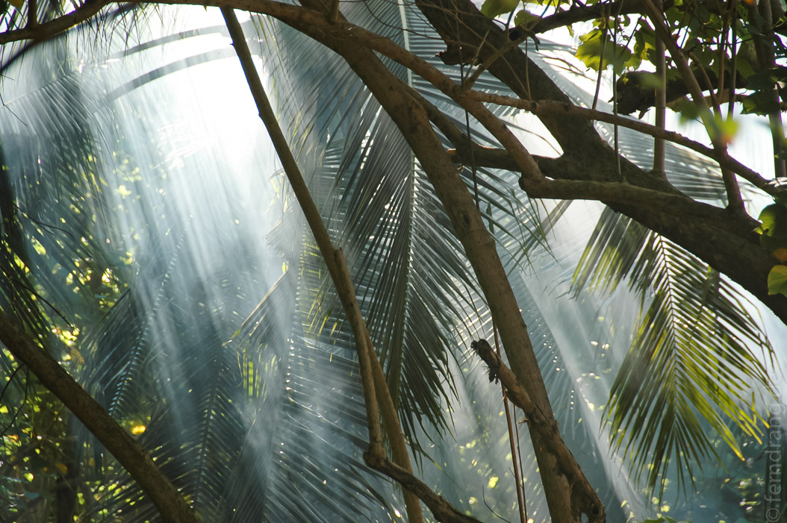
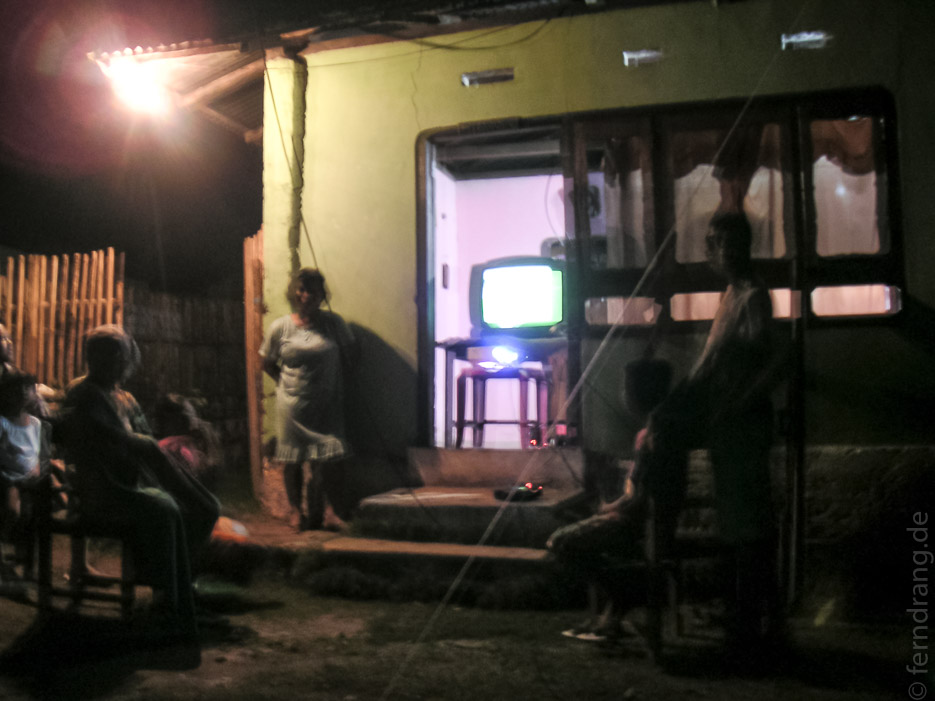
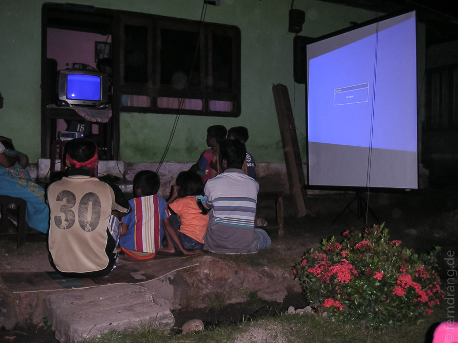

Nicht nur das Ende unseres Urlaubs naht, sondern auch das Ende der WM. Auf unserer zeit- und fenrsehlosen Insel haben wir nur zwischendurch mitbekommen, dass Deutschland erstaunlicherweise nicht rausgeflogen ist. Aber das Finale zu verpassen, war natürlich besonders ärgerlich. Doch Opo, der Resortleiter und Tauchguide, hat einen Plan ausgeheckt.
Um drei Uhr in der Nacht sind wir mit der gesamten Buchtbesatzung samt Kind und Kegel mit dem Schiff aufgebrochen. Zwanzig Minuten sind wir über das nächtliche Meer zu einem Dorf auf Bangka Island gefahren, das ein paar Buchten weiter liegt. Das Dorf hat ein paar kleine und zumindest fußgängertaugliche Sträßchen, die obligatorische Wellblech-Kirche und kleine, aber gepflegte Häuser. Nachdem wir um ein paar verschlafene Ecken gebogen sind, gelangten wir bei der öffentlichen Fußballvorführung an: Jemand hatte seinen Fernseher im Wohnzimmer einfach so umgedreht, dass man ihn von der Straße aus sehen konnte.
Von überall her wurden Plastikstühle gereicht und die Vorstellung konnte beginnen. Die Dorfbewohner waren größtenteils auf der deutschen Seiten, aber auch die Spanier hatten Fans. Immer wieder ist in den spannendsten Momenten das Antennenkabel verrutscht und das Signal verschwunden. Viele helfende Hände haben das Problem durch einen Teddybären gelöst, der das Kabel in der richtigen Position halten sollte. Aber es wurde für noch größeren Komfort gesorgt. Während der gesamten ersten Halbzeit hat ein Herr mit Lesebrille, ohne das Spiel auch nur für eine Sekunde zu beachten, die Bedienungsanleitung eines Beamers studiert. In der Halbzeitpause haben sie ihn endlich angeschlossen bekommen. Danach konnten wir uns zwischen dem Briefmarkenfernseher und einem fast zum Dreieck verzogenen Beamerbild entscheiden.
 Obwohl das Spiel fürchterlich war, hat sich der Ausflug extrem gelohnt. Bei den paar, schwachen Attacken der deutschen Elf wurde schon derart gejubelt, dass wir uns kaum vorstellen konnten, was bei einem Sieg passiert wäre.